BEiT: BERT Pre-Training of Image Transformers
Contents
BEiT: BERT Pre-Training of Image Transformers#
Hangbo Bao, Li Dong, Songhao Piao, Furu Wei
https://github.com/microsoft/unilm/tree/master/beit
Abstract#
논문의 제목인 BEIT (Bidirectional Encoder representation from Image Transformers)는 BERT 모델에서 차용한 것
입력 이미지를 2가지 방법을 통해 masked image modeling(MIM) 학습
VIT + Blockwise Masking : image patches (such as 16 x 16 pixles)
DALL-E Tokenizer : visual toekns (i.e., discrete tokens)
전체중의 일부 이미지 패치들을 mask 처리한 것이 VIT 모델에 들어감
사전 학습된 MIM objective를 통해 원본 visual tokens를 mask 처리가 된 이미지 패치로 부터 복원을 함
BEIT 를 사전 학습한 후, 사전학습된 모델에 downstream task를 붙여서 image classification, semantic segmentation을 했을 때 좋은 성능을 보임
1. Introduction#
트랜스포머(Attention is all you need [VSP+ 17]) 모델이 컴퓨터 비전에서도 좋은 성능을 보이게 됨
[DBK+20] An image is worth 16x16 words: Transformers for image recognition at scale.[TCD+20] Training data-efficient image transformers & distilation through attention.
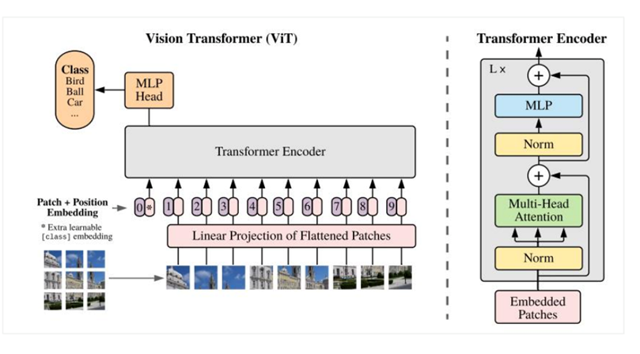
그러나, 이전 결과들에서 비전 트랜스포머는 Convolutional neural netwroks보다 많은 트레이닝 데이터가 필요함
데이터 부족 문제를 해결하기 위해서, Vision Transformer에서 self-supervised pre-training 방법을 통해 large-scale image data문제를 해결하고자 함
[LSB+21] Efficient training of visual transformers with small datasets.
contrastive learning
[CXH 21] An empricial study of training self-supervised vision transformers.
[XLY+21] Self-supervised learning with swin transformers.
self-distillation
[CTM+21] Emerging properties in self-supervised vision transformers.
자연어 처리에서는 BERT 모델이 큰 성공을 거두게 됨
[DCLT19] BERT : pre-training of deep bidirectional transformers for language understanding.
masked language modeling 을 통해 일정 텍스트들을 랜덤하게 mask 처리한 뒤에, 트랜스포머 인코딩을 통하여 오염된 텍스트들의 masked tokens 를 복원함
BERT에 동기부여를 받아서, denoising auto-encoding 아이디어에 착안하여 VIT를 사전학습 하는 방법을 고안함(Vision Community에서는 연구가 많이 되지 않았음)
BERT 스타일로 이미지 데이터를 사전학습 하는 것은 매우 챌린지 함
VIT 입력으로 사용할 사전에 존재하는 vocabulary(i.e, image patchs)가 없음
그래서 간단하게 가능한 masked patches에 대해서 softmax classifier 예측을 할 수가 없음
대조적으로, 단어나 BPE(https://ratsgo.github.io/nlpbook/docs/preprocess/bpe/)와 같은, 언어 vocabulary는 잘 정의되어 있고 auto-encoding 예측에 사용하기 쉬움
[SHB16; BPE] Neural machine translation of rare words with subword units.
직관적인 대안 방법으로는 task를 regression problem으로 보고, masked patches의 raw pixels을 예측하는 것
하지만 pixel-level 복원 task는 short-range dependencies & high-frequency details 를 사전 학습 할 때 모델링 기능을 낭비하게 됨
[RPG+21] Zero-shot text-to-image generation.
우리의 목표는, Vision Transformers 사전학습에서 발생되는 위에서 언급한 issue들을 극복하는 것
a self-supervised vision representation model
BEIT(Bidirectional Encoder representation from Image Transformers)를 소개함BERT에 영감을 받아서,
masked image modeling (MIM)을 제안함Figure 1과 같이, MIM에서는 이미지를 두가지 관점에서 바라봄
image patches
visual tokens
Figure 1
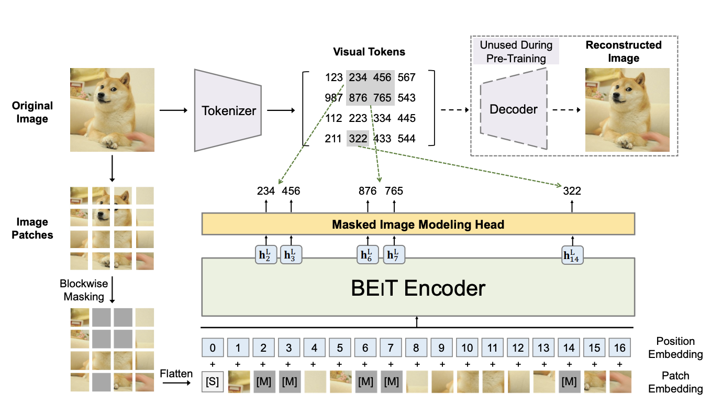
Figure 1 설명
BEIT pre-training의 Overview
사전 학습 전에 ‘image tokenizer’를 학습하여 auto encoding 스타일로 복원을 하는데, image는 discrete visual tokens로 tokenized됨(학습된 vocabulary에 따라서)
이미지를 1. image patches 2. visual tokens 두 가지 관점으로 봄
랜덤하게 몇몇 이미지 패치에 대해서 special mask embedding[M] (회색 처리 한 것) 를 함
패치들이 backbone vision Transformer에 들어감
사전학습의 목표는 오염된 이미지의 인코딩 벡터에 기반하여, 원본 이미지의 visual tokens를 예측하는 것
이미지를 쪼개어 grid of patches로 만들고 backbone Transformer에 넣음
이미지를 tokenize하여 discrete visual tokens로 만들었는데, discrete VAE 에서 사용하는 latent codes를 포함함
[RPG+21] Zero-shot text-to image generation
사전 학습 동안 일부 이미지 패치를 mask 시키고, transformer의 입력값으로 사용한다.
모델은 masked patches의 raw pixels 대신에, 원본 이미지의 visual tokens를 복원하는 것을 학습하게 된다.
BEIT 모델을 self-supervised learning으로 학습하고 image classification, semantic segmentation에 사용하기 위해 fine-tuning 함
처음부터 학습했을 때랑, self-supervised 로 학습했을 때 모두 좋은 성능을 보임
ImageNet Labels로 중간에 fine-tuning을 했을 때 성능이 향상됨
추가연구에서는, BERT 스타일로 이미지 데이터를 사전학습 한 것이 효율성이 좋다는 것을 입증하였음
성능 외에, fine-tuning 할 때 수렴 속도 및 안정성 향상으로 training 비용이 감소 됨
self-supervised BEIT가 semantic regions를 학습하는데 좋은 성능을 보임
Contibutions#
Self-supervised 방식으로 Vision Transformer를 pretrain 하기 위한 Masked Image Modeling(MIM) Task 를 제안함. Variational Autoencoder의 관점에서 이론적 설명을 제공함
BEIT를 pretrain 하고 image classification, semantic segmentation과 같은 downstream task를 다양한 설정으로 실험함
Self-supervised BEIT의 self-attention mechanism이 사람의 annotation 없이도 의미 영역(semantic regions)와 물체의 경계(object boundaries)를 학습하는 것을 제시함
2. Methods#
input image \(x\) 가 주어지면, BEIT는 상황에 맞는 벡터 표현으로 인코딩 함 (BEIT encodes it to contextualized vector representations.)
BEIT는 self-supervised learning을 사전학습 된 masked image modeling (MIM)을 통해서 함
MIM의 목표는 encoding vectors에 기반하여 masked된 image patches들을 복원하는 것
downstream tasks 는, task layers를 사전학습 된 BEIT에 붙이고 특정 데이터셋 에 대해서 fine-tuning을 수행함
2.1.1 Image Representations : Image patch#
2D image를 VIT(DBK+20) 처럼 일련의 패치로 쪼개어, 트랜스포머 모델에서 이미지 데이터를 받을수 있도록 함
[DBK+20] An image is worth 16x16 words: Transformers for image recognition at scale.
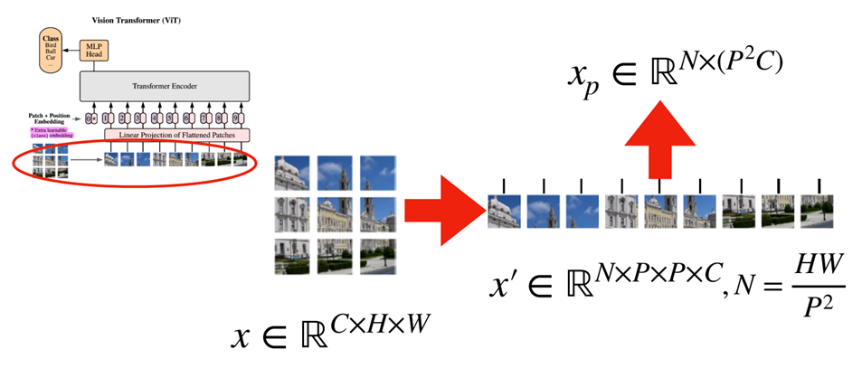
입력 이미지 \(x ∈ R^{H\times W \times C}\) 를 \(x^p ∈ R^{N\times(P^2C)}\) 으로 변환 시킴 / \(N = HW/P^2\) 이고, \(C\) 는 채널의 개수, (\(H,W\)) 는 이미지의 해상도, (\(P, P\))는 각 패치의 해상도
이미지 패치들 \(\{x^p_i\}^N_{i=1}\) 는 벡터로 flatten 되고, 선형 투영됨
이미지 패치들은 raw pixels을 보존하고 있고, BEIT의 입력 features로 사용됨
실험에서는 224 x 224 이미지를 16x16 패치를 사용하여 14x14 grid 이미지 패치들로 만들었음
2.1.2 Visual Tokens#
자연어 처리와 유사하게, 원복 픽셀들 대신에 이미지 토크나이저를 사용하여 이산적인 이미지 토큰들을 얻음
Dall-E 처럼, discrete variation autoencoder(dVAE)를 사용하여 이미지 토크나이저를 학습 시킴
입력 이미지 \(x ∈ R^{H\times W \times C}\) 를 \(z = [z_1, ... z_N] ∈ V^{h\times w}\) 로 변경 (\(V = \{1, ...|V|\}\))
visutal token learning 에는 두 가지 모듈이 있음
tokenizer : \(q_\phi(z|x)\) 토크나이저는 이미지 픽셀 \(x\) 를 visual codebook(vocabulary) 이산형 토큰 \(z\) 로 변환 시키는 함수
decoder : \(p_\psi(x|z)\) 는 visual tokens \(z\) 를 입력 이미지 \(x\) 로 복원하는 함수
reconstruction objective : \(E_{z∼q_{\phi(z|x)}}[logp_\psi(x|z)]\)
위에 처럼 나타낸 이유는 latent visual tokens가 이산적이어서, 모델 학습에서 미분이 불가능 하기 때문
Gumbel-softmax relaxation 을 사용해 모델 parameters를 학습 시킴
\(q_\phi\) 는 uniform prior 가 할당됨
이미지를 14 x 14 grid of visual tokens 로 tokenize 시킴
하나의 이미지에 대한 visual tokens의 개수와 image patches의 개수는 동일하다.
vocabulary size \(|V|\) 는 8192로 함
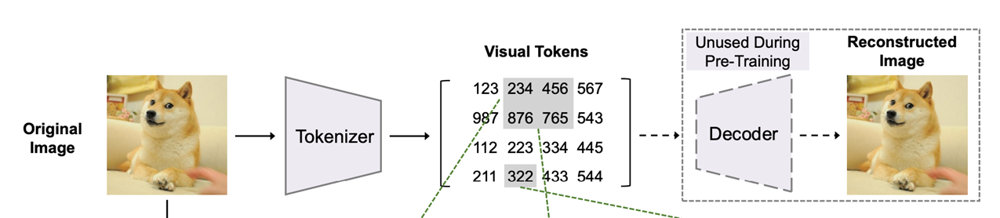
[배경지식] : Variational Auto Encoder#
출처 : https://www.youtube.com/watch?v=CQoM0r2kMvI
Variational Auto Encoder는 Autoencoder 모델에서 latent vector \(z\) 가 평균 \(μ\)와 분산 \(σ^2\) 를 따르는 정규분포로 가정한 모델
목적함수의 하한경계인 ELBO (Evidence of Lower Bound)는 \(logp(x)\)가 최대가 되는 매개변수를 탐색하는 것이 목적이고 1)Reconstruction Term 2)Regularization Term으로 나뉨
Reconstruction Term : 주어진 입력 데이터 x로 부터 latent vector z를 샘플링하고, z를 통하여 x를 다시 복원
Regularization Term : KL Divergence를 통해 주어진 입력 데이터 x로 부터 latent vector z를 샘플링하는 확률 분포 q(z|x)가 표준 정규 분포 p(z)와 유사하도록 만들어 줌
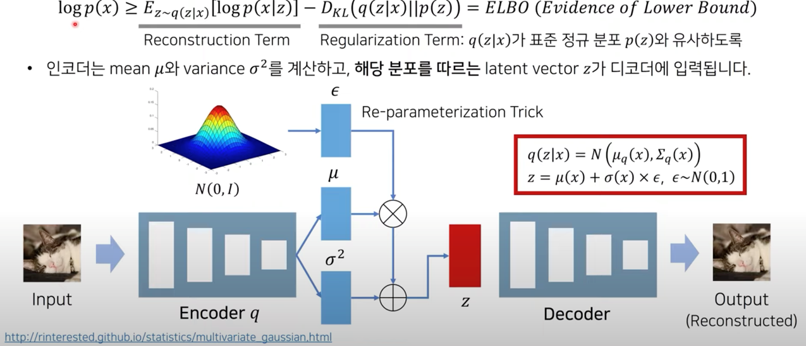
[배경지식] : VQ-VAE(Vector Quantised-Variational AutoEncoder)#
출처 : https://www.youtube.com/watch?v=CQoM0r2kMvI
latent vector가 VAE 처럼 Continuous하지 않고 Discrete 한 경우 사용할 수 있는 알고리즘
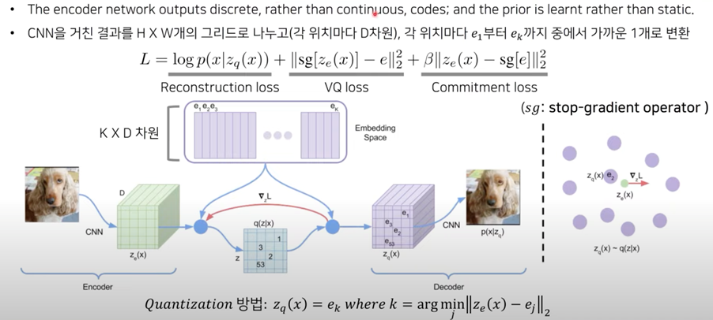
Encoder는 Conv layer와 Residual block을 사용하고, Decoder는 Transposed convolution을 사용함
Loss
Reconstruction loss : 정답 이미지와 비교하여 생성된 이미지가 얼마나 차이나는지 비교
VQ loss : 코드북의 embedding을 인코더 결과와 유사하게 만들어서 Codebook을 최적화
Commitment loss : Regularization Term으로, Codebook의 벡터와 가까운 값을 출력하도록 Encoder를 최적화
Discrete vector를 저장하고 있는 Visual Codebook은 자연어처리의 vocabulary와 유사하게 비슷한 특징을 가지는 데이터들이 이산적으로 구분되어 있는 것 / 크기는 8,192
코드북(Codebook)
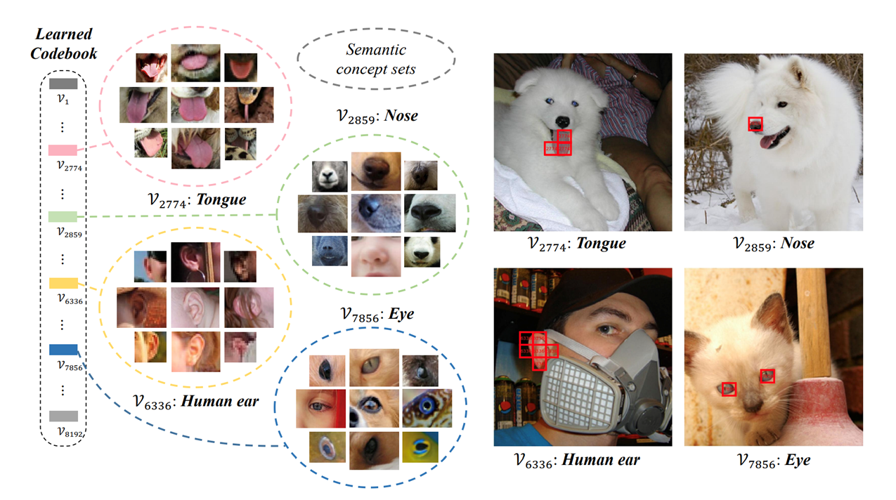
[배경지식] : Gumbel softmax relaxation#
출처1 : http://dsba.korea.ac.kr/seminar/?mod=document&uid=1964
출처2 : https://www.youtube.com/watch?v=SRcPE0-SGOM
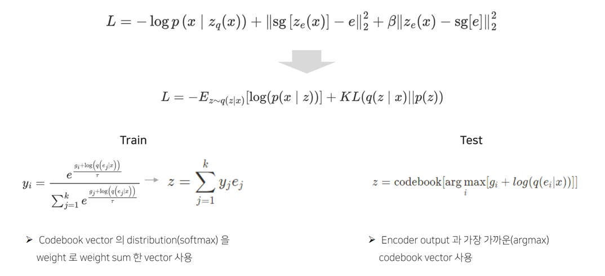
VQ-VAE에서 사용하는 loss term은 Codebook vector 사용시, Codebook vector가 이산적이기 때문에 미분이 불가능하여 모델을 학습할 수 없음. 이를 해결하기 위해 Gumbel softmax relaxation을 사용함
Gumbel Softmax
일반적인 소프트맥스의 관점의 경우, 아래의 케이스에서 1번의 실력 값이 10으로 가장 크기 때문에 one-hot encoding으로 [1,0,0,0]이 됨
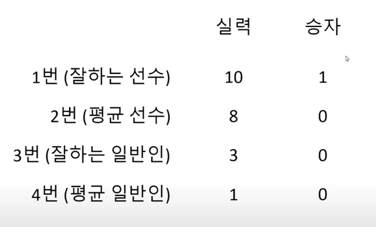
하지만 운이라는 확률적인 특징을 가진 변수를 같이 고려하는 경우에는, 2번의 실력+운 을 계산한 값이 9로 가장 크기 때문에 one-hot encoding으로 [0,1,0,0]으로 바뀌게 됨
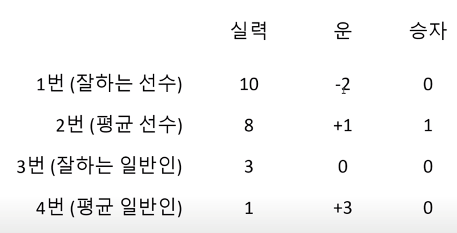
Softmax에서 랜덤한 요소를 반영할 때 Gumbel distribution을 사용하게 되고, Gumbel distribution은 다양한 분포의 여러 샘플의 최대 (또는 최소) 분포를 모델링하는 데 사용되는 확률분포임
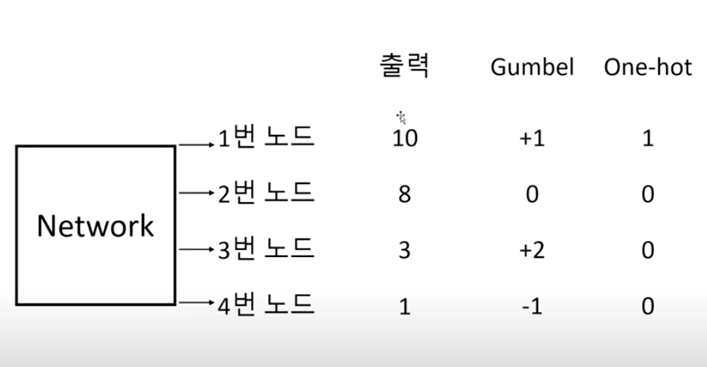
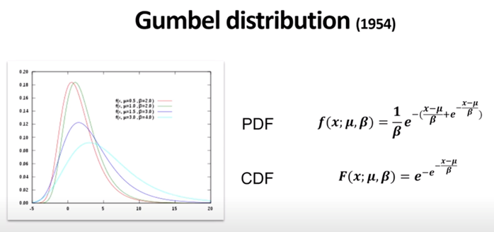
확률변수 \(\pi\) 는 Categorical Distribution를 따르고 확률변수 값들을 모두 더하면 1
Gumbel 확률변수 G는 0~1사이의 값을 가짐
Gumbel softmax relaxation을 사용하여 Codebook vector가 이산적인 것을 Gumbel Softmax를 통해 연속형으로 변환하고 Codebook Vector와 곱한 뒤에 가중합을 하여 이미지를 복원함
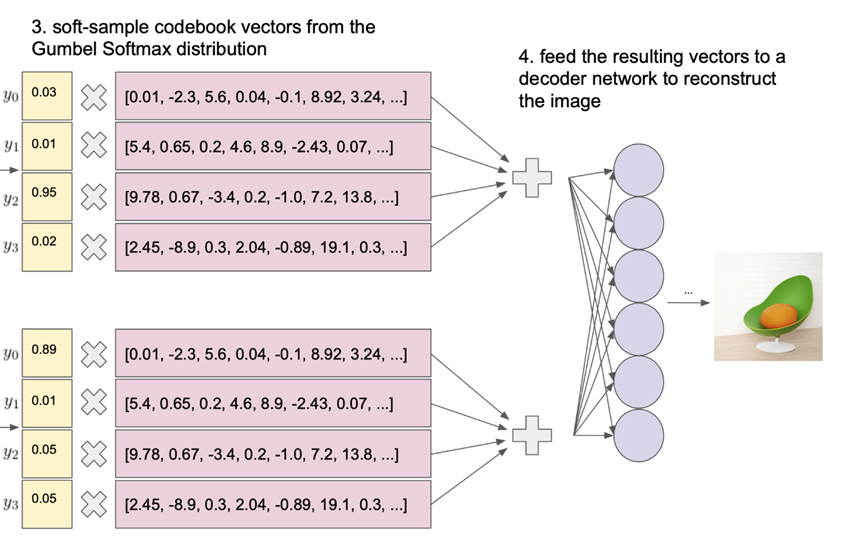
Gumbel Softmax 값 Z는 \(log\pi_k+G_k\) 값을 최대로 하는 k값을 가지게됨#
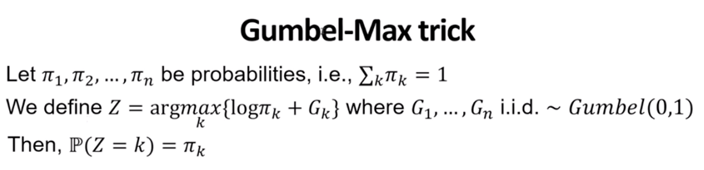
Temperature 값 \(\tau\) 를 조절함에 따라서 결과값이 달라지는데
일반적인 Categorical Distribution에서는 argmax인 sample의 index를 선택하는데
\(\tau\)값이 커지면서 다른 sample의 index가 선택될수 있는 확률이 생기고
\(\tau\)값이 10이 되면 sample이 선택될 확률분포가 uniform distribution에 가까워짐
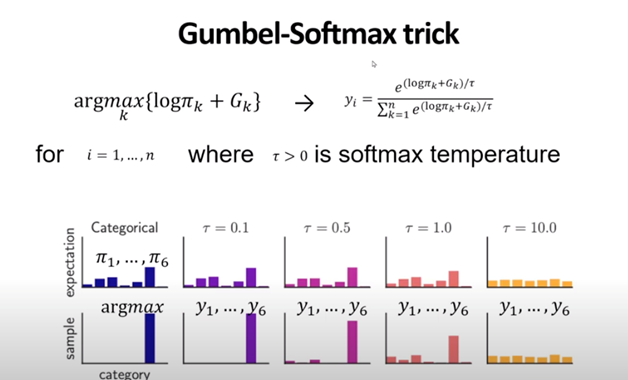
2.2 Backbone Network: Image Transformer#
일반적인 Transformer 구조를 Backbone Network로 사용함
Transformer의 input으로 들어가는 image patches는 \(\{x^p_i\}^N_{i=1}\)
패치들은 linear projected가 되어서 임베딩 패치 \(Ex^p_i\) , \(E ∈ R^{(P^2C)\times D}\)
Special token [S] 를 입력 시퀀스에 넣음
학습 가능한 1D Position embeddings \(E_{pos} ∈ R^{N \times D}\) 를 패치 임베딩에 넣음
input vectors \(H_0 = [e_{[s]} , Ex^p_i , ... , Ex^p_N] + E_{pos}\) 를 Transformer 입력으로 넣음
\(H^l = Transformer(H^{l-1}), where l = 1, .... L\)
output vectors의 마지막 layers \(H^l = [H^L_{[S]} , H^L_{1} , ...., H^L_{N}]\) 는 이미지 패치들의 인코딩된 표현으로 사용되고, \(h^L_i\) 는 i-th 이미지 패치의 벡터
2.3 Pre-Training BEIT: Masked Image Modeling#
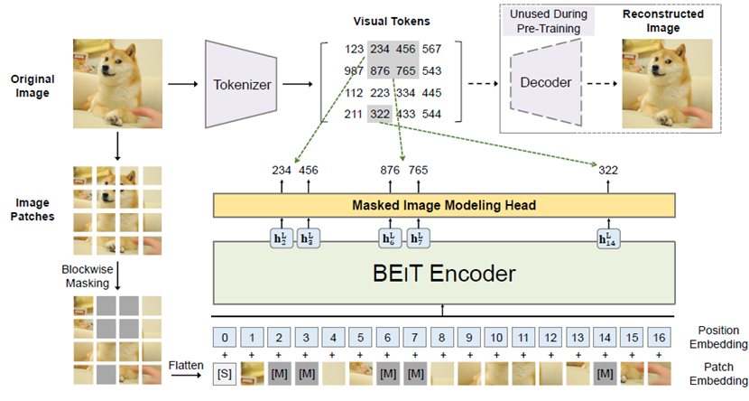
2.1.2의 Discrete VAE를 통해 Image를 Visual Tokens로 변환한 뒤에
Pre-training objective Function
Masked/오염된 이미지로부터 정확한 visual tokens \(z_i\)를 최대로 하는 log-likelihood를 찾는 것
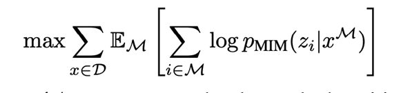
전체 patch에서 patch단위로 아무 곳이나 랜덤하게 Masking 될 부분을 선택하는 것보다는, patch에서 인접한 patch들을 함께 masking 처리해주는 것이 이미지에서 주변정보를 파악하는데 도움이 되고 성능향상에도 도움이 된다고 함
이미지에서 약 40%의 patch를 랜덤하게 마스킹 하고#
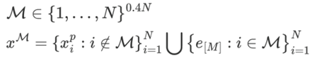
Vision Transformer + softmax classifier 를 통해 masked image input 에 대한 visual token 을 예측함#
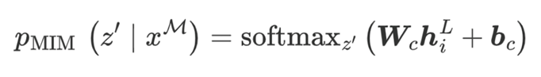
Blockwise Masking#
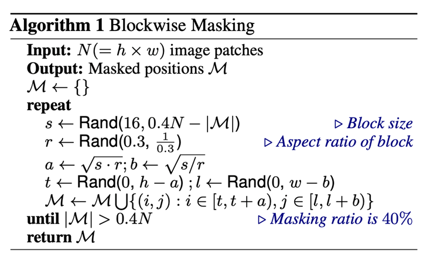
s : Masking size 샘플링 (최소 16개 이상의 patch 마스킹)
r : Aspect ratio를 0.3 ~ 1/0.3의 범위에서 샘플링
s,r에서 계산한 값으로 masking block의 높이(a), 넓이(b)를 계산
Masking block의 좌상단 점 좌표(t, l) 샘플링
이전 Masking 정보와 합친 뒤, Masking의 비율이 전체 patch 수의 40%를 넘어가면 종료함
예시
아래 예시의 경우 3번의 Masking 영역을 찾았을 때, Masking 된 갯수가 전체 patch 수의 40%인 75를 넘었으므로 종료함 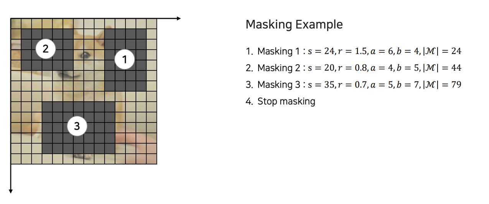
2.4 From the Perspective of Variational Autoencoder#
BEIT 의 pre-training은 Variational Autoencoder 관점에서 설명할 수 있음
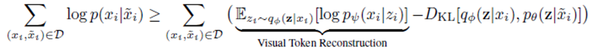
\(q_\phi(z|x)\) : 이미지 x가 주어졌을 때 visual token z를 구하는 분포
\(p_\psi(x|z)\) : visual token z가 주어졌을 때, 이미지 x를 구하는 분포
\(p_\theta(z|\tilde x)\) : masked image 가 주어졌을 때, visual token을 복원하는 분포
위 수식은 아래와 같이 변형될 수 있음
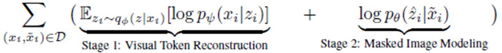
Stage 1 : dVAE에서 Image Tokenizer를 얻는 부분에 대한 Term
Stage 2 : Masked Image가 주어졌을 때, Image Tokenizer를 얻는 것에 대한 Term
2.5 Pre-Training Setup#
BEIT 모델의 Pre-Training은 아래와 같이 설정되고 진행됨
VIT-B(Base) 모델 설정과 비슷하게 설정되어 있음
12-layer Transformer with 768 hidden size
12 attention heads
16x16 patch size
Image Tokenizer는 Dall-E [RPG+21] 에서 학습된 것을 사용하였고, visual tokens의 vocabulary size는 8192
Training 데이터로 1.2M(120만 장) 갯수가 있는 ImageNet-1K를 사용함
Data Augmentation : Random resized cropping, horizontal flipping, color jittering
해상도 및 패치 사이즈 : 224x224 resolution (14x14 image patches)
Masking 패치의 개수는 전체 패치의 약 40%인 75개 까지
Hyperparameter 설정
500k steps (=800 epochs)
2k(2,000) batch size
Nvidia Tesla V100 32GB GPU 16개로 5일동안 돌림
Adam Optimizer를 사용하였고, \(\beta_1 = 0.9, \beta_2 = 0.999\)
learning rate = 1.5e-3, 10 epochs 동안 warmup, cosine learning rate decay
3. Experiments#
3.1 Image classification#
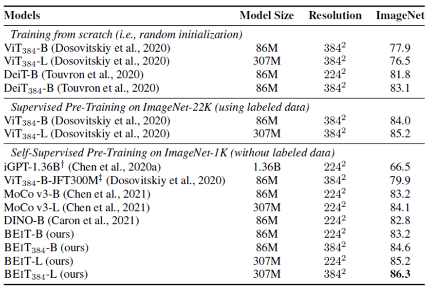
기본 해상도 224x224 외에도 해상도를 384x384로 증가시킨 모델에 대해서도 실험
ImageNet-1K로 Self-Supervised 사전 학습된 BEIT 모델이 다른 모델과 비교해서 비슷하거나 더 좋은 분류 성능을 보임
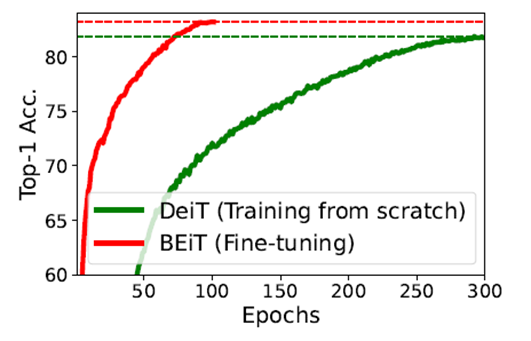
scratch부터 학습하는 DeiT 모델과 비교했을 때, BEiT를 Fine Tuning 할 때 더 적은 Epochs에서 더 좋은 Top-1 Accuracy 결과가 나오는 것을 실험에서 확인함
3.2 Semantic Segmentation#
Transformer 모델에서 Image Segmentation을 수행하기 위해서
SETR-PUP [ZLZ+20] Rethinking semantic segmentation from a sequence-to-sequence perspective with transformers에서 사용한 Downstream task layer를 사용함
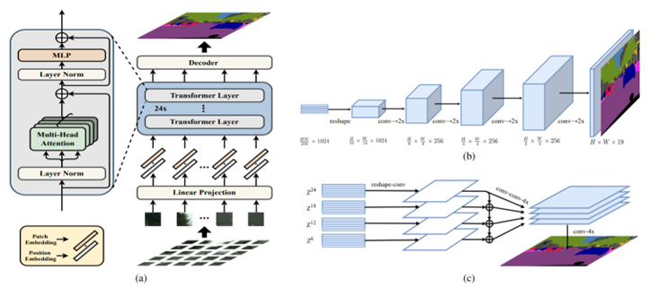
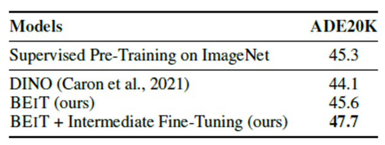
다른 방법에 비해서 BEIT가 mIoU(Mean Intersection over Union) 성능이 더 좋음
Intermediate Fine-Tuning은 Image Net으로 Fine-tuning을 하고, 다음에 ADE20K 로 한번 더 Fine-Tunign 한 것
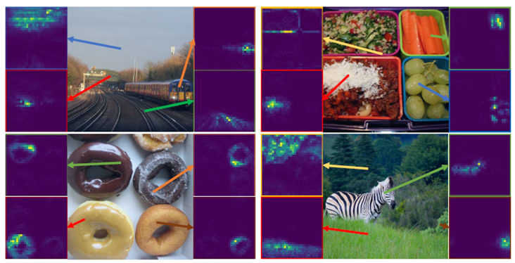
BEiT 모델이 적용된 Self attention map을 확인하였을 때, 사람의 annotation 없이도 이미지 내에서 개별 물체의 구분이 잘 되는 것을 확인할 수 있음
3.3 Ablation study on classification, segmentation#
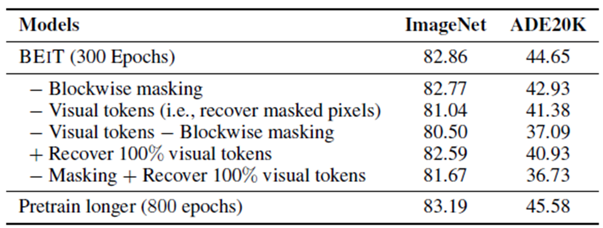
Visual token을 사용했을 때 classification, segmentation에서 성능이 좋음
Blockwise Masking이 사용되었을 때 segmentation에서 성능이 좋아짐
300Epochs 보다 800 Epochs로 학습이 더 많이 되었을 때 성능이 좋음
4. Conclusion#
이전 연구들(Contrastive learning, Self-distillation) 보다 BEIT 모델의 성능이 뛰어남
Vision Transformer에서 BERT 모델과 같이 masked 처리 된 input을 사용하여 pre-training을 하였을 때 좋은 결과를 나오는 것을 보여줌
사전 Annotation 없이 Vision Transformer 모델을 통해서 Semantic Segmentation Task를 잘 수행하는 것을 확인 함
Author by 박민식
Edit by 김주영